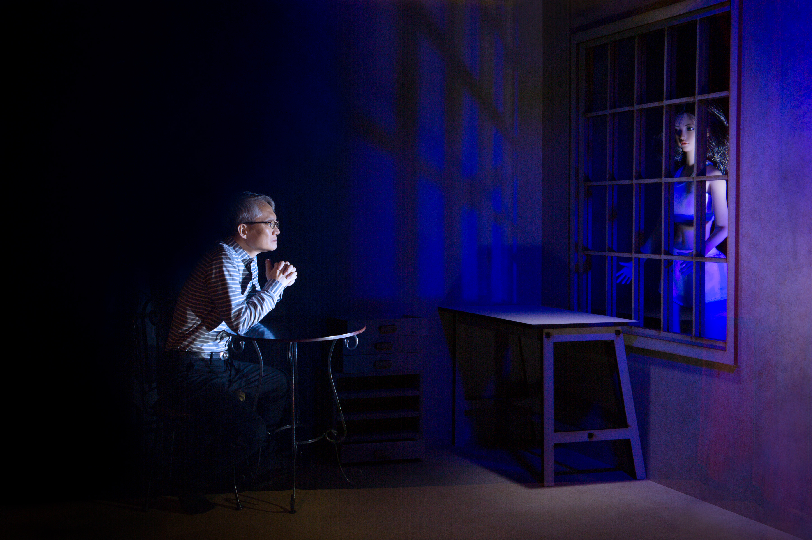

〈Avatar II〉 온라인 전시 오픈
2026.02.15

alt="Avatar II 전시 이미지" class="notice-image">Gallery Window의 새로운 온라인 전시 〈Avatar II〉가 공개되었습니다.
이번 전시는 갤러리 창이 구성되어지고 첫번째 전시로써 온라인 갤러리 시스템의 시험가동 성격이 있습니다. Avatar II는 공간미끌의 초대로 지난 2024년 10월 8일부터 10월 20일까지 전시를 진행한 바 있습니다. 이번 온라인 전시에는 공감미끌에서의 전시보다 전시 작품의 수를 더 늘려서 진행합니다. 이번 전시를 진행하면서 온라인 갤러리 시스템을 완성하고, 홍보도 함께 이루어질 예정입니다.